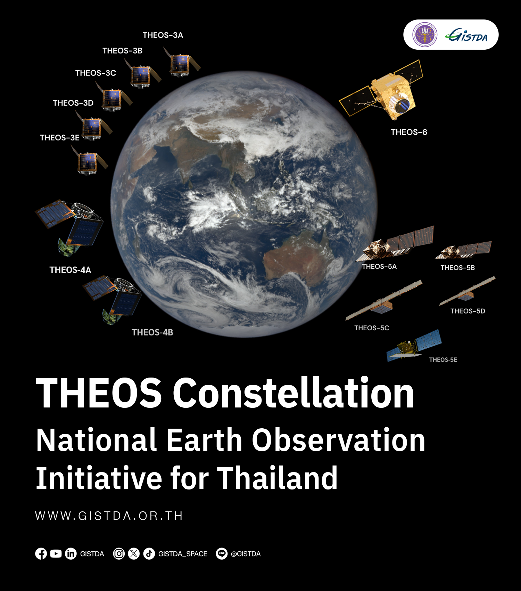

THEOS-3A is the first satellite to be fully developed, manufactured, and integrated in Thailand. The program is currently in its development stage, with the engineering model under construction. I was tasked with running static and modal load analysis to verify that the engineering model would survive testing on the shaker system.
Max shear stress, von Mises stress, and displacement all stayed within the structure's allowable strength limits. (Detailed simulation images and results from this project are not published here, per GISTDA's data policy.)